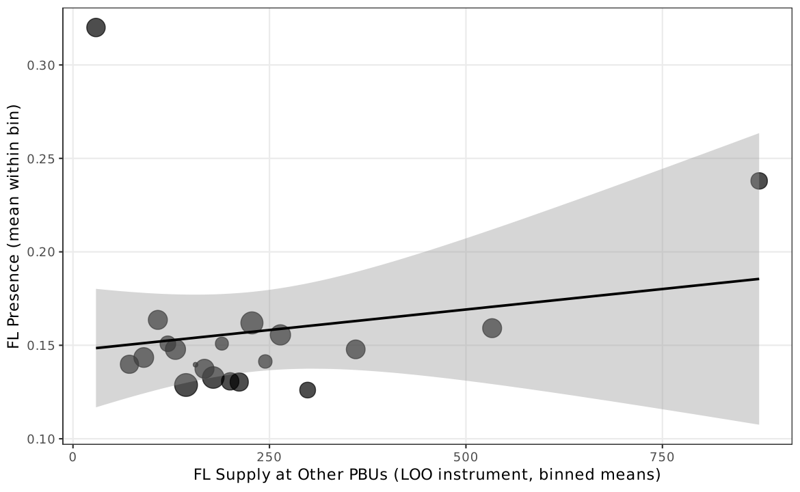

Main Results¶
This page presents the core empirical findings: OLS price regressions, CADE validation, IV estimates, network-split analysis, and Bajari--Ye tests.
OLS Price Regressions (H1)¶
FL presence is associated with significantly higher negotiated prices across all specifications.
| Specification | Coefficient | SE | Effect (%) | \(N\) |
|---|---|---|---|---|
| (1) Item + Year FE | 0.087* | (0.024) | +9.1% | 1,654,447 |
| (2) Item + Year + PBU FE | 0.064* | (0.022) | +6.6% | 1,654,447 |
| (3) Pregao only (all FE) | 0.089* | (0.025) | +9.3% | 1,334,729 |
| (4) Convite only (all FE) | 0.037 | (0.022) | +3.8% | 319,718 |
H1 supported
FL-present tenders exhibit 4--9% higher prices, robust across specifications. The preferred specification (column 2, all FE) yields a 6.6% price premium.
Non-FL (Genuine) Firms¶
| Specification | Coefficient | SE | Effect (%) |
|---|---|---|---|
| (2) All FE | 0.143* | (0.010) | +15.4% |
FL-present tenders have more, not fewer, genuine competitors---ruling out competitive displacement and consistent with cover bidders being added on top of genuine competition.

CADE External Validation¶
We cross-match FL firms against 65 CADE procurement cartel convictions (47 firms matched to BEC).
| Metric | Value |
|---|---|
| FL firms co-participating with CADE convicts | 193 / 2,735 (7.1%) |
| Expected rate (permutation, 1,000 draws) | 2.0% |
| Ratio | 3.5x |
| Permutation \(p\)-value | \(< 0.001\) |
FL detects beyond known cartels
Excluding all CADE-involved markets, the FL coefficient is 0.062 (vs. 0.064 baseline)---virtually identical. The FL screen captures price anomalies beyond the cases already prosecuted by CADE.
Instrumental Variable Estimates (H2)¶
First Stage¶
The leave-one-out instrument is strongly relevant: \(F = 396\) (preferred specification).
{kind=link}

2SLS Estimates (Preferred: Panel A)¶
| DV | OLS | 2SLS | First-stage \(F\) |
|---|---|---|---|
| Log price | 0.064 | 0.194* | 396 |
| Log firms | 0.167 | 0.501* | 396 |
| Log bids | 0.169 | 0.614* | 396 |
| Log non-FL firms | 0.143 | 0.404* | 396 |
IV Magnitude Interpretation¶
The implied signal-to-total-variance ratio:
Given that the FL dummy is a deliberately coarse screen defined by a distributional threshold, a signal-to-noise ratio of one-third is plausible. The OLS estimate is treated as a conservative lower bound and the IV estimate as an upper bound.
LATE interpretation
The IV estimate captures the Local Average Treatment Effect for complier tenders---those whose FL participation is shifted by supply-side availability. The LATE may exceed the ATE if compliers are disproportionately affected by cover bidding.
Network-Split Results¶
FL firms are classified into concentrated-market (high winner HHI) and competitive-market (low winner HHI) subgroups based on co-bidding networks.
| Group | \(N\) FL firms | Coefficient | SE | Effect (%) |
|---|---|---|---|---|
| All FL | 2,735 | 0.064* | (0.022) | +6.6% |
| Concentrated-market FL | 1,356 | 0.032 | (0.024) | +3.3% |
| Competitive-market FL | 1,379 | 0.126* | (0.031) | +13.4% |
Price effect concentrates in competitive markets
The FL--price effect is four times larger in competitive markets than in concentrated markets. Cover bidding is redundant where dominant firms already control pricing---but most valuable where genuine competitive threat exists.

Bajari--Ye Tests¶
Three Claims¶
Claim 1 --- Exchangeability rejected. The KS test yields \(D = 0.15\) (\(p < 0.001\)): FL bid residuals are drawn from a different distribution than non-FL residuals.
Claim 2 --- Conditional independence rejected. The mean pairwise product of FL residuals is 5.16 (bootstrap \(p < 0.001\)): when one FL bid is R$1 above its predicted value, the paired FL bid is on average R$5.16 above its prediction.
Claim 3 --- Placebo passes. Randomly assigned fake groups among non-FL bidders yield a pairwise product of 5.80, consistent with common tender-level shocks rather than coordination. Adding tender FE absorbs these shocks, dropping both products substantially while preserving the FL vs. non-FL contrast.
Bid-level evidence of coordination
The Bajari--Ye diagnostics indicate that FL bids are neither drawn from the same distribution as non-FL bids nor independently determined within tenders. This pattern is consistent with cover bidding.
Mechanisms¶
Three mechanism tests jointly narrow the space of alternative explanations:
| Mechanism | Test | Result | Interpretation |
|---|---|---|---|
| M1: Selection | Non-FL firm count | +15.4% more genuine competitors | Rules out competitive crowding-out |
| M2: Reference price | Winning-bid-to-ref-price ratio | -4.1% closer to reference | Consistent with coordination anchor |
| M3: Reverse causality | Lagged price on FL entry | Elasticity \(\approx\) 0.004 | Two orders of magnitude too small |